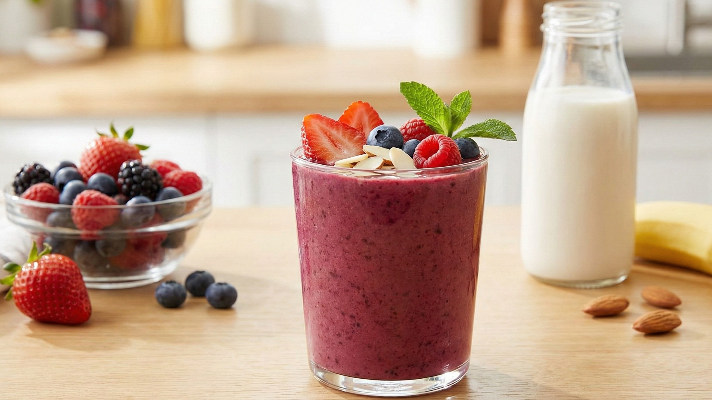
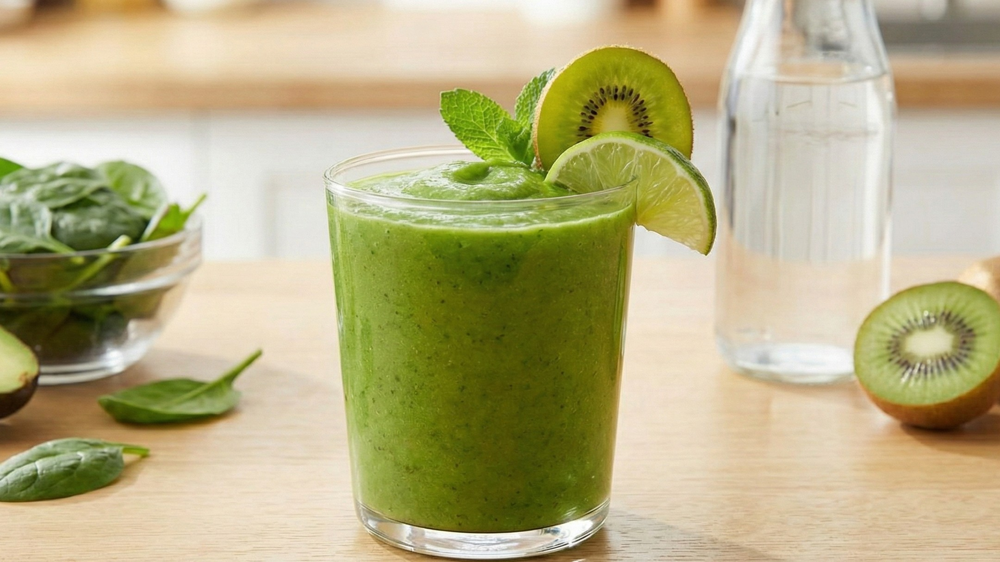
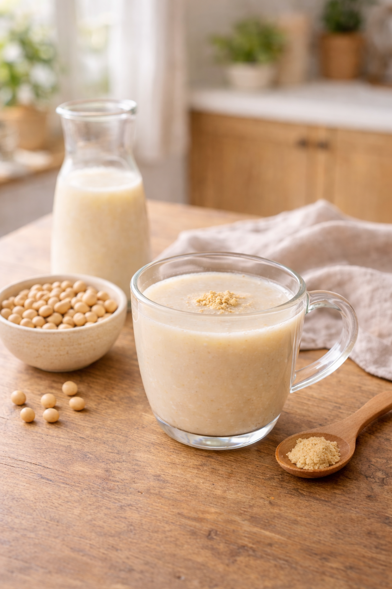

こんにちは、栄養士のYuriです。
「高い美容液を使っているのに、肌の調子が上がらない…」
結婚式を控えた花嫁様から、よくそんな相談を受けます。
私たちの肌は、食べたものから作られています。
挙式当日に「内側から発光するような肌」を手に入れるために、忙しい朝でもミキサーで回すだけの「飲む美容液」習慣を始めませんか？
1. くすみ払い！抗酸化ベリーの「透明感」スムージー
「最近、顔色が冴えない」「ドレス試着で肌が暗く見えた」という方へ。ビタミンEとポリフェノールの力で、肌のサビ（酸化）をリセットします。

【材料（1人分）】
- 冷凍ミックスベリー：1/2カップ
- バナナ：1/2本
- アーモンドミルク（無糖）：150ml
- はちみつ：小さじ1（お好みで）
👩⚕️ Nutritionist's Point
ベリーのアントシアニン（抗酸化作用）と、アーモンドミルクのビタミンE（若返りのビタミン）のW効果。挙式前のストレスで発生する活性酸素から肌を守り、透明感を引き出します。
ベリーのアントシアニン（抗酸化作用）と、アーモンドミルクのビタミンE（若返りのビタミン）のW効果。挙式前のストレスで発生する活性酸素から肌を守り、透明感を引き出します。
2. 化粧ノリUP！アボカドの「潤いチャージ」スムージー
乾燥肌でファンデーションが粉っぽくなる花嫁様へ。アボカドの「良質な油分」が、内側から肌を保湿し、柔らかく整えます。

【材料（1人分）】
- アボカド：1/4個
- キウイ：1個
- 水 または ココナッツウォーター：150ml
- レモン汁：少々
👩⚕️ Nutritionist's Point
「食べる美容液」アボカドには、肌のセラミドを作るリノール酸が豊富。キウイのビタミンCも加わり、コラーゲン生成を助けてハリのある肌へ導きます。
「食べる美容液」アボカドには、肌のセラミドを作るリノール酸が豊富。キウイのビタミンCも加わり、コラーゲン生成を助けてハリのある肌へ導きます。
3. むくみスッキリ！甘酒と豆乳の「温活」ドリンク
「ドレスの背中にお肉が乗るのが怖い」「顔がむくみやすい」という方へ。腸を温めて代謝を上げ、老廃物を流すホットドリンクです。

【材料（1人分）】
- 米麹甘酒（ノンアルコール）：100ml
- 無調整豆乳：100ml
- おろし生姜：少々
👩⚕️ Nutritionist's Point
甘酒の食物繊維が腸内環境を整え、生姜が血流を促進。体温が上がると代謝も上がり、むくみが取れてフェイスラインやデコルテがすっきりします。
甘酒の食物繊維が腸内環境を整え、生姜が血流を促進。体温が上がると代謝も上がり、むくみが取れてフェイスラインやデコルテがすっきりします。
継続のコツは「無理をしないこと」
挙式準備は長期戦です。「毎朝これだけは飲む」と決めるだけでも、肌は確実に応えてくれます。
自分の体調に合わせて、美味しく飲めるレシピを選んでくださいね。